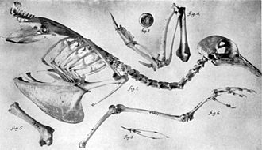

Turnaround video of an adult male specimen at Naturalis Biodiversity Center
The passenger pigeon was sexually dimorphic in size and coloration. It weighed between 260 and 340 g (9.2 and 12.0 oz). The adult male was about 390 to 410 mm (15.4 to 16.1 in) in length. It had a bluish-gray head, nape, and hindneck. On the sides of the neck and the upper mantle were iridescent display feathers that have variously been described as being a bright bronze, violet or golden-green, depending on the angle of the light. The upper back and wings were a pale or slate gray tinged with olive brown, that turned into grayish-brown on the lower wings. The lower back and rump were a dark blue-gray that became grayish-brown on the upper tail-covert feathers. The greater and median wing-covert feathers were pale gray, with a small number of irregular black spots near the end. The primary and secondary feathers of the wing were a blackish-brown with a narrow white edge on the outer side of the secondaries. The two central tail feathers were brownish gray, and the rest were white.
The tail pattern was distinctive as it had white outer edges with blackish spots that were prominently displayed in flight. The lower throat and breast were richly pinkish-rufous, grading into a paler pink further down, and into white on the abdomen and undertail covert feathers. The undertail coverts also had a few black spots. The bill was black, while the feet and legs were a bright coral red. It had a carmine-red iris surrounded by a narrow purplish-red eye -ring. The wing of the male measured 196 to 215 mm (7.7 to 8.5 in), the tail 175 to 210 mm (6.9 to 8.3 in), the bill 15 to 18 mm (0.59 to 0.71 in), and the tarsus was 26 to 28 mm (1.0 to 1.1 in).
--^Turnaround video of an adult female specimen at Naturalis
The adult female passenger pigeon was slightly smaller than the male at 380 to 400 mm (15.0 to 15.7 in) in length. It was duller than the male overall, and was a grayish-brown on the forehead, crown, and nape down to the scapulars, and the feathers on the sides of the neck had less iridescence than those of the male. The lower throat and breast were a buff-gray that developed into white on the belly and undertail-coverts. It was browner on the upperparts and paler buff brown and less rufous on the underparts than the male. The wings, back, and tail were similar in appearance to those of the male except that the outer edges of the primary feathers were edged in buff or rufous buff.The wings had more spotting than those of the male. The tail was shorter than that of the male, and the legs and feet were a paler red. The iris was orange red, with a grayish blue, naked orbital ring. The wing of the female was 180 to 210 mm (7.1 to 8.3 in), the tail 150 to 200 mm (5.9 to 7.9 in), the bill 15 to 18 mm (0.59 to 0.71 in), and the tarsus was 25 to 28 mm (0.98 to 1.10 in).
--^Turnaround video of a juvenile female specimen at Naturalis
The juvenile passenger pigeon was similar in plumage to the adult female, but lacked the spotting on the wings, and was a darker brownish-gray on the head , neck, and breast. The feathers on the wings had pale gray fringes (also described as white tips), giving it a scaled look. The secondaries were brownish-black with pale edges, and the tertial feathers had a rufous wash. The primaries were also edged with a rufous-brown color. The neck feathers had no iridescence. The legs and feet were dull red, and the iris was brownish, and surrounded by a narrow carmine ring. The plumage of the sexes was similar during their first year.
Of the hundreds of surviving skins, only one appears to be aberrant in color—an adult female from the collection of Walter Rothschild, Natural History Museum at Tring. It is a washed brown on the upper parts, wing covert, secondary feathers, and tail (where it would otherwise have been gray), and white on the primary feathers and underparts. The normally black spots are brown, and it is pale gray on the head, lower back, and upper-tail covert feathers, yet the iridescence is unaffected. The brown mutation is a result of a reduction in eumelanin, due to incomplete synthesis (oxidation) of this pigment. This sex-linked mutation is common in female wild birds, but it is thought the white feathers of this specimen are instead the result of bleaching due to exposure to sunlight.
--^Skeleton of a male bird, 1914
The passenger pigeon was physically adapted for speed, endurance, and maneuverability in flight, and has been described as having a streamlined version of the typical pigeon shape, such as that of the generalized rock dove (Columba livia). The wings were very long and pointed, and measured 220 mm (8.7 in) from the wing-chord to the primary feathers, and 120 mm (4.7 in) to the secondaries. The tail, which accounted for much of its overall length, was long and wedge-shaped (or graduated), with two central feathers longer than the rest. The body was slender and narrow, and the head and neck were small.
The internal anatomy of the passenger pigeon has rarely been described. Robert W. Shufeldt found little to differentiate the bird's osteology from that of other pigeons when examining a male skeleton in 1914, but Julian P. Hume noted several distinct features in a more detailed 2015 description. The pigeon had particularly large breast muscles that indicate powerful flight (musculus pectoralis major for downstroke and the smaller musculus supracoracoideus for upstroke). The coracoid bone (which connects the scapula, furcula, and sternum) was large relative to the size of the bird, 33.4 mm (1.31 in), with straighter shafts and more robust articular ends than in other pigeons. The furcula had a sharper V-shape and was more robust, with expanded articular ends. The scapula was long, straight, and robust, and its distal end was enlarged. The sternum was very large and robust compared to that of other pigeons; its keel was 25 mm (0.98 in) deep. The overlapping uncinate processes, which stiffen the ribcage, were very well developed. The wing bones (humerus, radius, ulna, carpometacarpus) were short but robust compared to other pigeons. The leg bones were similar to those of other pigeons.